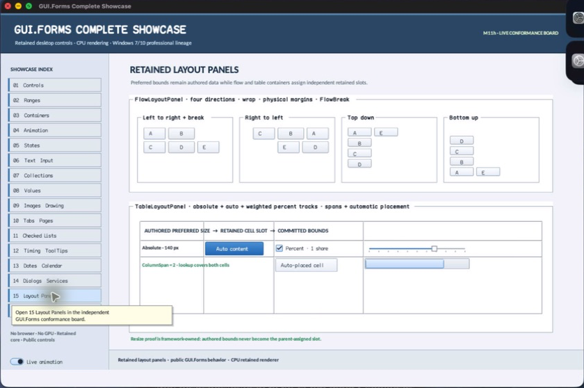

class · visual
ScaledGroupBox
ScaledGroupBox combines GroupBox caption/mnemonic semantics with stable design-space child slots and proportional retained arrangement.
Visual evidence

Ownership and hierarchy
- Hierarchy
- GroupBox → ScaledGroupBox
- Declaration
- include/gui_forms/controls/panel/group_box/scaled_group_box/scaled_group_box.hpp:11
- Definition
- src/controls/panel/group_box/scaled_group_box/scaled_group_box.cpp
Declared methods
ScaledGroupBox public
explicit ScaledGroupBox(StableId stable_id, std::string text =Constructs a titled GroupBox with a validated positive design coordinate system.
design_size public
[[nodiscard]] Size design_size() const noexceptReturns the width and height that define authored design coordinates.
set_design_size public
void set_design_size(Size size)Validates finite positive dimensions and invalidates arrangement when the design coordinate system changes.
add_at public
void add_at(Control::Ptr child, Rect design_bounds)Validates an unparented child and finite nonnegative design rectangle, adds it, and records its stable-id slot atomically.
set_design_bounds public
void set_design_bounds(const Control& child, Rect design_bounds)Requires an existing direct child, validates its design rectangle, and updates the stable slot.
design_bounds public
[[nodiscard]] std::optional<Rect> design_bounds(const Control& child) constReturns the authored design-space rectangle for a current child, if assigned.
arrange public
void arrange(Rect final_bounds) overrideReconciles live slots and scales each authored rectangle into the caption-aware GroupBox content area.
reconcile_slots private
void reconcile_slots()Public ScaledGroupBox operation. Its exact signature is inventoried here; follow the linked implementation for callback order and failure behavior.